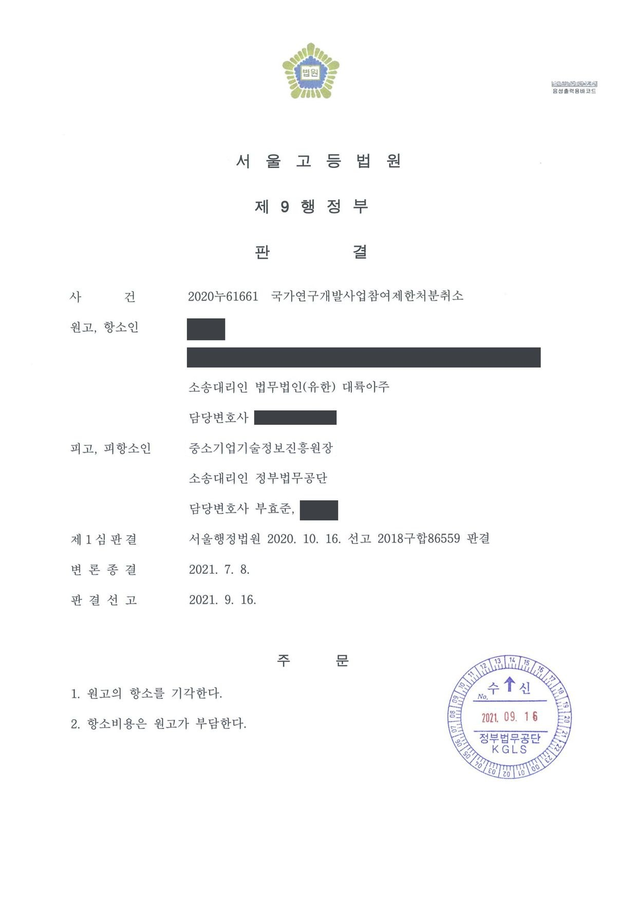

국가연구개발사업 참여제한처분 취소소송 (항소심)
서울고등법원 2020누61661 · 담당변호사 부효준
판결문

사건의 요지
중소기업 기술개발 지원사업의 과제 수행 과정에서 불성실 수행을 이유로 한 1년의 참여제한 처분에 대하여, 전담기관의 내부 관리지침이 성실성 판단의 근거가 될 수 있는지와 처분의 재량권 일탈·남용 여부가 다투어진 사건입니다. 항소심은 처분이 적법하다고 본 제1심의 판단을 유지했습니다.
주제별 사례참여제한처분 취소소송
사건의 주요 내용
원고는 대학 산학협력단이 주관기관으로 수행한 중소기업 기술개발 지원사업 과제의 책임자입니다. 이 과제는 분광 반사율 측정 장비에 쓰이던 초고압 제논 램프를 대체할 수 있는 복합파장 LED 광원 모듈을 개발하는 것이었습니다. 과제가 끝난 뒤 전문기관의 최종평가위원회는 과제를 '실패'로 평가하였고, 주관기관이 성실성입증보고서를 제출하자 성실성검증위원회가 전문기관의 사업 관리지침에 정해진 네 가지 지표에 따라 심의하였으나 2개 이상의 지표에서 우수 판정을 받지 못하여 성실수행으로 인정되지 않았습니다.
전문기관은 2018년 11월 구 중소기업 기술혁신 촉진법 제31조 제1항 제1호(연구개발의 결과가 극히 불량하여 평가에 따라 실패한 사업으로 결정된 경우)를 근거로 원고에게 1년의 국가연구개발사업 참여제한처분을 하였습니다. 원고는 그 취소를 구하는 소송을 제기하였으나 제1심(서울행정법원, 2020년 10월 선고)은 청구를 기각하였고, 원고가 항소하였습니다. 부효준 변호사는 항소심에서 피고 전문기관을 대리하였습니다.
쟁점
- 전문기관이 운영요령의 위임에 따라 제정한 사업 관리지침이 과제 수행의 성실성을 판단하는 근거가 될 수 있는지
- 최종보고서 제출 시한까지 제출된 자료를 기준으로 할 때 과제가 사업계획서에 제시한 최종 목표를 달성하였다고 볼 수 있는지
원고(항소인)의 주장
- 전문기관이 운영요령 제49조에 따라 마련한 사업 관리지침은 전문기관의 내부적인 기준에 불과하여 대외적 구속력이 없으므로, 이를 근거로 과제 수행의 성실성 여부를 판단하여 '불성실'로 본 것은 위법하다고 주장하였습니다.
- 과제의 결과물은 기존 분광 반사율 측정 장비에 사용되던 초고압 제논 램프를 대체하는 성능을 갖추었으므로 결과적으로 과제의 목표를 모두 달성하였다고 보아야 하는데, 이와 달리 보고 한 처분은 위법하다고 주장하였습니다.
- 제1심에서는 이에 더하여 처분이 재량권을 일탈·남용한 것이라는 주장도 하였습니다.
부효준 변호사의 주장
- 관리지침은 구 중소기업 기술혁신 촉진법 제31조 제4항, 같은 법 시행령 제20조의2, 운영요령 제49조의 위임에 따라 연구개발 결과의 평가 절차·방법·기준을 구체화한 것이고, 무엇보다 원고 측이 체결한 협약 제15조 제1항에서 운영요령 등을 준수하기로 약정하였으므로 성실성검증위원회는 관리지침의 기준에 따라 평가하여야 한다고 주장하였습니다.
- 주관기관은 협약기간 종료 후 2개월 이내에 최종보고서와 공인인증기관 시험성적서 등 증빙자료를 제출하여야 하고 최종평가는 그 자료를 중심으로 이루어지는데, 제출 시한까지 제출된 자료만으로는 사업계획서의 최종 목표를 달성하였다고 볼 수 없다고 다투었습니다.
법원의 판단
항소심 법원은 법령보충적 행정규칙에 관한 대법원 판례(2019. 10. 17. 선고 2014두3020, 3037 판결)를 전제로, 운영요령과 관리지침의 평가 관련 조항은 구 중소기업 기술혁신 촉진법 제31조 제4항, 같은 법 시행령 제20조의2 제4항, 운영요령 제49조의 위임에 근거하여 평가 항목인 '연구개발의 과정 및 방법의 적절성'과 '목표 달성도 및 결과의 활용 가능성'을 공정하고 전문적으로 평가하기 위한 절차·방법·기준을 정한 것으로서 위임 범위를 벗어나지 않았다고 보았습니다.
나아가 원고와 전문기관 사이의 협약 제15조 제1항에서 운영요령 등을 준수하기로 명시하였으므로, 관리지침이 법령보충적 행정규칙에 해당하는지와 관계없이 성실성검증위원회는 협약에 따라 관리지침의 평가 기준과 방법으로 평가하여야 하고, 2개 이상의 지표에서 우수 판정을 받아야 성실수행으로 인정되는데 주관기관이 그러한 판정을 받지 못하였으므로 '실패' 판정은 정당하다고 판단하였습니다.
목표 달성 여부에 관하여는, 최종보고서에 다양한 파장대를 추출하기 위한 구체적인 LED 광원 구성 내용이 없어 결과물이 제논 램프를 고출력 LED로 교체한 것에 불과하다는 최종평가위원회의 평가를 수긍할 수 있고, 여러 개의 LED를 사용한 것처럼 기재하였으나 심사 당시 1개의 LED를 사용한 결과물을 제출하였으며, 가장 중요한 방열시스템에 관하여 인증기관 시험 없이 자체시험 결과만 첨부한 점 등을 들어 최종 목표를 모두 달성하였다고 보기 어렵다고 하였습니다. 이에 따라 제1심판결을 유지하고 원고의 항소를 기각하였습니다.
상급행정기관이 하급행정기관에 대하여 업무처리지침이나 법령의 해석적용에 관한 기준을 정하여 발하는 이른바 행정규칙은 일반적으로 행정조직 내부에서만 효력을 가질 뿐 대외적인 구속력을 갖는 것은 아니다. 하지만 법령의 규정이 특정 행정기관에 그 법령 내용의 구체적 사항을 정할 수 있는 권한을 부여하면서 그 권한행사의 절차나 방법을 특정하고 있지 아니한 관계로 수임행정기관이 행정규칙의 형식으로 그 법령의 내용이 될 사항을 구체적으로 정하고 있다면 그와 같은 행정규칙은 위에서 본 행정규칙이 갖는 일반적 효력으로서가 아니라, 행정기관에 법령의 구체적 내용을 보충할 권한을 부여한 법령 규정의 효력에 의하여 그 내용을 보충하는 기능을 갖게 된다. 따라서 이와 같은 행정규칙은 해당 법령의 위임한계를 벗어나지 않는 한 그것들과 결합하여 대외적인 구속력이 있는 법규명령으로서의 효력을 가진다. 그리고 이러한 경우 특정 행정규칙이 위임의 한계를 준수하고 있는지는 해당 법령 규정의 목적과 규정 내용, 규정의 체계, 다른 규정과의 관계 등을 종합적으로 살펴 판단하여야 하는데, 해당 법령의 해석상 가능한 것을 명시한 것에 지나지 아니하거나 해당 법령 조항의 취지에 근거하여 이를 구체화하기 위한 것인 때에는 위임 범위를 벗어난 것으로 볼 수 없다(대법원 2019. 10. 17. 선고 2014두3020, 3037 판결 등 참조).
서울고등법원 2020누61661 판결 이유 '[추가 판단 부분] 나. 1) 가) 관련 법리'
그렇다면 이 사건 관리지침이 법령보충적 행정규칙에 해당하는지 여부와 관계없이, 성실성검증위원회는 이 사건 협약에 따라 이 사건 관리지침에 정해진 평가 기준과 방법에 의하여 평가를 하여야 하고, 이에 따르면 성실 수행 평가가 이루어지기 위해서는 2개 이상의 지표에서 우수 판정을 받아야 함에도 불구하고, 주관기관인 대학 산학협력단은 성실성검증위원회 위원들로부터 그러한 판정을 받지 못하였으므로, 이 사건 과제에 대하여 '실패'로 판정한 성실성검증위원회의 평가는 정당하다고 볼 것이다. 따라서 원고의 이 부분 주장을 받아들이지 않는다.
서울고등법원 2020누61661 판결 이유 '나. 1) 나) 구체적 판단' (2) 부분
이와 같이 다양한 파장대를 추출하기 위한 구체적인 LED 광원 구성 등에 대한 내용이 최종보고서 등에 기재되어 있지 아니한 이상, 이 사건 과제의 결과물은 초고압 제논 램프를 고출력 LED로 교체한 것에 불과하여 추가적인 기술 개발이 있다고 보기 어렵다고 판단한 최종평가위원회의 평가결과를 수긍할 수 있다.
서울고등법원 2020누61661 판결 이유 '나. 2) 나) (1)' 부분
※ 판결 이유 가운데 이 사건의 판단 기준이 된 부분을 그대로 옮긴 것으로, 당사자 이름 등은 가렸습니다.
이 사건이 보여 주는 것
중소기업 기술개발 지원사업에서 '불성실 수행' 여부는 전문기관이 운영요령의 위임을 받아 만든 사업 관리지침의 지표에 따라 성실성검증위원회가 판정합니다. 이 판결은 그 관리지침이 법규명령의 효력을 갖는지에 관한 논쟁과 관계없이, 협약에서 운영요령·관리지침을 준수하기로 약정한 이상 그 기준에 따른 평가를 받아들여야 한다고 본 점에서 의미가 있습니다. 관리지침이 내부 기준에 불과하다는 주장만으로는 제재처분을 다투기 어렵습니다.
또한 과제의 성공 여부는 최종보고서 제출 시한까지 제출된 최종보고서와 공인인증기관 시험성적서 등 증빙자료를 기준으로 판단됩니다. 사업계획서에 적은 개발 내용과 평가항목마다 그에 대응하는 결과와 시험성적서를 시한 안에 갖추어 제출하는 것이 중요하고, 소송 단계에서 뒤늦게 성능을 소명하는 것은 받아들여지기 어렵습니다.
비슷한 처분을 받으셨다면
국가연구개발 제재처분은 사전통지를 받은 날부터 20일 이내에 재검토 요청 의견을 내고, 처분이 있음을 안 날부터 90일 이내에 취소소송을 제기해야 합니다. 처분서나 사전통지서를 받은 날짜부터 확인해 드립니다.